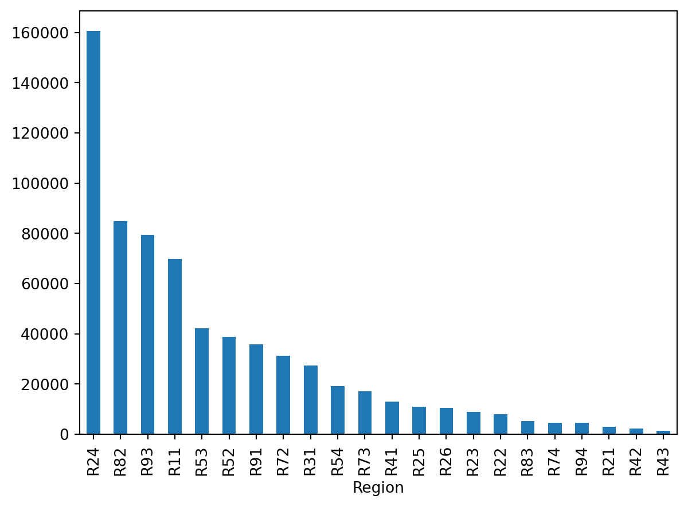
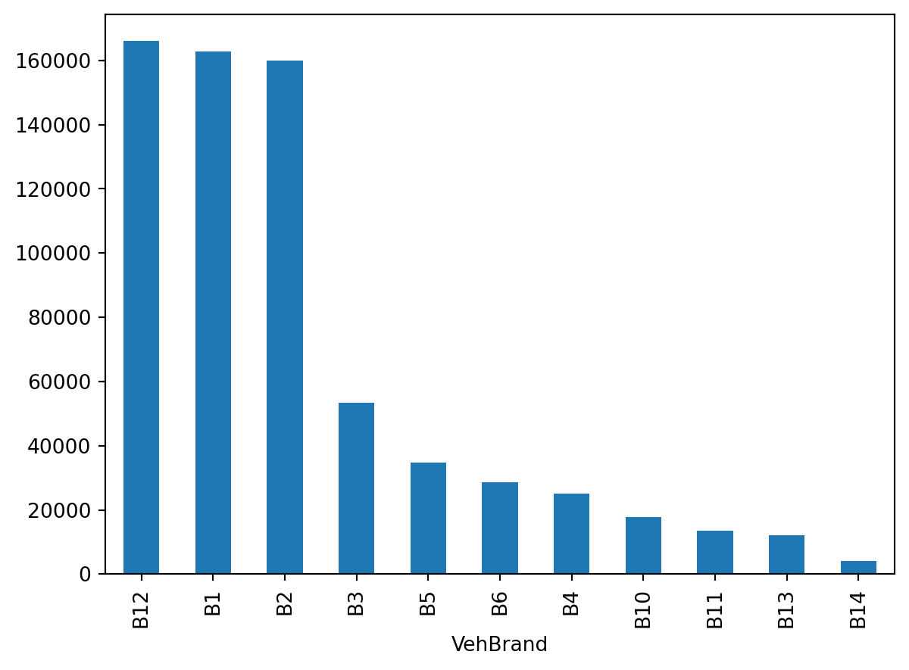

2025-02-24 14:09:41.912230: I tensorflow/core/util/port.cc:153] oneDNN custom operations are on. You may see slightly different numerical results due to floating-point round-off errors from different computation orders. To turn them off, set the environment variable `TF_ENABLE_ONEDNN_OPTS=0`.
2025-02-24 14:09:41.920617: E external/local_xla/xla/stream_executor/cuda/cuda_fft.cc:477] Unable to register cuFFT factory: Attempting to register factory for plugin cuFFT when one has already been registered
WARNING: All log messages before absl::InitializeLog() is called are written to STDERR
E0000 00:00:1740366581.930347 566806 cuda_dnn.cc:8310] Unable to register cuDNN factory: Attempting to register factory for plugin cuDNN when one has already been registered
E0000 00:00:1740366581.933439 566806 cuda_blas.cc:1418] Unable to register cuBLAS factory: Attempting to register factory for plugin cuBLAS when one has already been registered
2025-02-24 14:09:41.943637: I tensorflow/core/platform/cpu_feature_guard.cc:210] This TensorFlow binary is optimized to use available CPU instructions in performance-critical operations.
To enable the following instructions: AVX2 AVX_VNNI FMA, in other operations, rebuild TensorFlow with the appropriate compiler flags.
Checks if the dataset does not already exist within the Jupyter Notebook directory.
2
Fetches the dataset from OpenML
3
Converts the dataset into csv format
4
If it already exists, then read in the dataset from the file.
IDpol
ClaimNb
Exposure
Area
VehPower
VehAge
DrivAge
BonusMalus
VehBrand
VehGas
Density
Region
0
1.0
1
0.10000
D
5
0
55
50
B12
'Regular'
1217
R82
1
3.0
1
0.77000
D
5
0
55
50
B12
'Regular'
1217
R82
2
5.0
1
0.75000
B
6
2
52
50
B12
'Diesel'
54
R22
3
10.0
1
0.09000
B
7
0
46
50
B12
'Diesel'
76
R72
4
11.0
1
0.84000
B
7
0
46
50
B12
'Diesel'
76
R72
...
...
...
...
...
...
...
...
...
...
...
...
...
678008
6114326.0
0
0.00274
E
4
0
54
50
B12
'Regular'
3317
R93
678009
6114327.0
0
0.00274
E
4
0
41
95
B12
'Regular'
9850
R11
678010
6114328.0
0
0.00274
D
6
2
45
50
B12
'Diesel'
1323
R82
678011
6114329.0
0
0.00274
B
4
0
60
50
B12
'Regular'
95
R26
678012
6114330.0
0
0.00274
B
7
6
29
54
B12
'Diesel'
65
R72
678013 rows × 12 columns
Data dictionary
IDpol: policy number (unique identifier)
Area: area code (categorical, ordinal)
BonusMalus: bonus-malus level between 50 and 230 (with reference level 100)
Density: density of inhabitants per km2 in the city of the living place of the driver
DrivAge: age of the (most common) driver in years
Exposure: total exposure in yearly units
Region: regions in France (prior to 2016)
VehAge: age of the car in years
VehBrand: car brand (categorical, nominal)
VehGas: diesel or regular fuel car (binary)
VehPower: power of the car (categorical, ordinal)
ClaimNb: number of claims on the given policy (target variable)
Region column
French Administrative Regions
Poisson regression
The model
Have \{ (\boldsymbol{x}_i, y_i) \}_{i=1, \dots, n} for \boldsymbol{x}_i \in \mathbb{R}^{47} and y_i \in \mathbb{N}_0.
Assume the distribution
Y_i \sim \mathsf{Poisson}(\lambda(\boldsymbol{x}_i))
We have \mathbb{E} Y_i = \lambda(\boldsymbol{x}_i). The NN takes \boldsymbol{x}_i & predicts \mathbb{E} Y_i.
Note
For insurance, this is a bit weird. The exposures are different for each policy.
\lambda(\boldsymbol{x}_i) is the expected number of claims for the duration of policy i’s contract.
Normally, \text{Exposure}_i \not\in \boldsymbol{x}_i, and \lambda(\boldsymbol{x}_i) is the expected rate per year, then
Y_i \sim \mathsf{Poisson}(\text{Exposure}_i \times \lambda(\boldsymbol{x}_i)).
Help about the “poisson” loss
help(keras.losses.poisson)
Help on function poisson in module keras.src.losses.losses:
poisson(y_true, y_pred)
Computes the Poisson loss between y_true and y_pred.
Formula:
```python
loss = y_pred - y_true * log(y_pred)
```
Args:
y_true: Ground truth values. shape = `[batch_size, d0, .. dN]`.
y_pred: The predicted values. shape = `[batch_size, d0, .. dN]`.
Returns:
Poisson loss values with shape = `[batch_size, d0, .. dN-1]`.
Example:
>>> y_true = np.random.randint(0, 2, size=(2, 3))
>>> y_pred = np.random.random(size=(2, 3))
>>> loss = keras.losses.poisson(y_true, y_pred)
>>> assert loss.shape == (2,)
>>> y_pred = y_pred + 1e-7
>>> assert np.allclose(
... loss, np.mean(y_pred - y_true * np.log(y_pred), axis=-1),
... atol=1e-5)
Poisson probabilities
Since the probability mass function (p.m.f.) of the N \sim \mathsf{Poisson}(\lambda) distribution is \mathbb{P}(N = k) = \frac{\lambda^k \mathrm{e}^{-\lambda}}{k!} then the p.m.f. of Y_i \sim \mathsf{Poisson}(\lambda(\boldsymbol{x}_i)) is
Help on function poisson in module keras.losses:
poisson(y_true, y_pred)
Computes the Poisson loss between y_true and y_pred.
The Poisson loss is the mean of the elements of the `Tensor`
`y_pred - y_true * log(y_pred)`.
...
In other words,
\text{PoissonLoss} = \frac{1}{n} \sum_{i=1}^n \lambda(\boldsymbol{x}_i) - y_i \log \bigl( \lambda(\boldsymbol{x}_i) \bigr) .
TODO: Modify this to do a stratified split. That is, the distribution of ClaimNb should be (about) the same in the training, validation, and test sets.
TODO: Add in lasso or ridge regularization to the GLM using the validation set.
Neural network
Look at the counts of the Region and VehBrand columns
freq["Region"].value_counts().plot(kind="bar")

freq["VehBrand"].value_counts().plot(kind="bar")

TODO: Consider combining the least frequent categories into a single category. That would reduce the cardinality of the categorical columns, and hence the number of input features.
WARNING: All log messages before absl::InitializeLog() is called are written to STDERR
I0000 00:00:1740366588.977027 566984 service.cc:148] XLA service 0x76cc4400ada0 initialized for platform CUDA (this does not guarantee that XLA will be used). Devices:
I0000 00:00:1740366588.977056 566984 service.cc:156] StreamExecutor device (0): NVIDIA GeForce RTX 3090 Ti, Compute Capability 8.6
2025-02-24 14:09:48.998273: I tensorflow/compiler/mlir/tensorflow/utils/dump_mlir_util.cc:268] disabling MLIR crash reproducer, set env var `MLIR_CRASH_REPRODUCER_DIRECTORY` to enable.
I0000 00:00:1740366589.051320 566984 cuda_dnn.cc:529] Loaded cuDNN version 90300
I0000 00:00:1740366589.218709 566984 device_compiler.h:188] Compiled cluster using XLA! This line is logged at most once for the lifetime of the process.